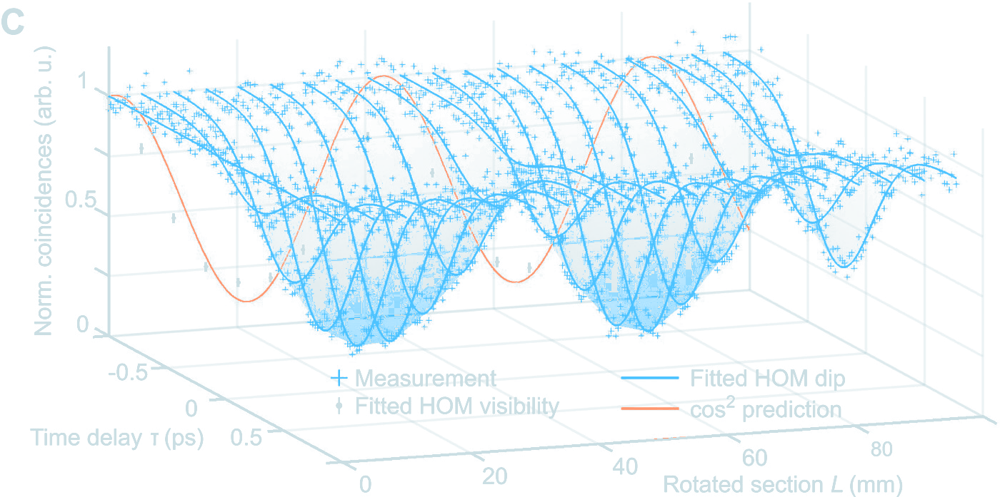
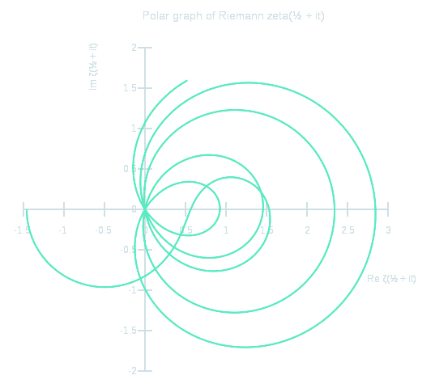

01 · WEB PROJECT✳
Mindful
A web project shaped around mindful moments. Step inside and explore the live experience.
STUDENT · CLASS 10
Curious about how things work.
I’m a 10th grade student who likes asking big questions, following the maths, and seeing where an idea can go.
A work in progress—in the best way
I’m in 10th grade, with a growing interest in the ideas that explain how our world works. Maths and science give me ways to explore those ideas; coding gives me a way to make some of them real.
I’m still learning the basics, and I like that there’s always another concept to understand, problem to solve, or question to chase.
My curiosity map
Different subjects, same feeling: there’s something interesting to uncover.
I chase the patterns hidden in numbers, shapes, and graphs—and love the click when a problem finally opens up.
↗ 02 / QUESTIONSmall equations, enormous ideas: I’m curious about the rules that explain motion, energy, and our universe.
↗ 03 / TRANSFORMFrom invisible atoms to the materials we use, I like finding out what things are made of—and what they can become.
↗ 04 / TAKE OFFLift, thrust, and bold engineering: I’m fascinated by what carries a machine from the runway—or beyond our atmosphere.
↗Visual notes
Two very different ways to explore patterns in physics and maths.

Measured coincidences and fitted curves across time delay and rotated section length.

A polar view of ζ(½ + it), traced through real and imaginary values.
A beginner who likes to build
I have a mild grasp of coding so far, and I’m building it up step by step. I enjoy the process of turning a small idea into something that works—and learning from the parts that don’t.
What I’m working towards ↓# The learning loop question = "what if?" while curious: explore(question) try_an_idea() learn_from(result) # then ask a better question
Projects
A couple of projects I’m glad to share. Take a look around.
A web project shaped around mindful moments. Step inside and explore the live experience.
My corner of the web: a place for the ideas I’m learning, building, and curious enough to chase.
Curiosity, with a process
Find the part I don’t understand yet, then get specific about it.
Work through the ideas one at a time and look for the connections.
Test what I’ve learned, notice what happened, and keep improving.
A few proud moments
These are milestones along the way, not the finish line.
Questions, ideas, rocket facts
If you’d like to get in touch, send me a note through Gmail.